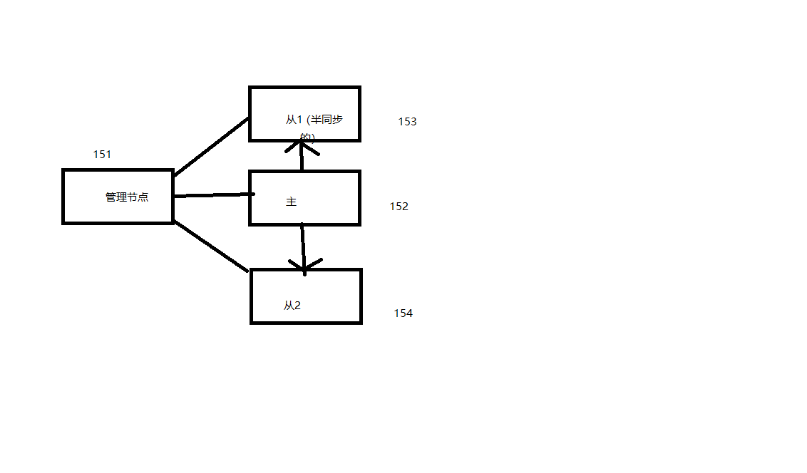

9.11. mysql的mha架构¶
9.11.1. mha工作原理¶
9.11.2. 实验架构图¶
本实验的是mha的实现， 需要先搭建一个一主2从的架构，在配置半同步，在配置mha。
9.11.3. mysql主从配置¶
## 主服务器配置下
[root@centos154 ~]# yum install http://download2.linuxpanda.tech/mysql/percona-xtrabackup-24-2.4.9-1.el7.x86_64.rpm
[root@centos-152 ~]# yum install mariadb-server
[root@centos-152 ~]# vim /etc/my.cnf
# 在mysqld片段下添加如下3行
log-bin
innodb_file_per_table
server_id=1
skip_name_resolve=1
# 发送配置文件到远程下
[root@centos-152 ~]# scp /etc/my.cnf 192.168.46.153:/etc/
[root@centos-152 ~]# scp /etc/my.cnf 192.168.46.154:/etc/
# 启动服务
[root@centos-152 ~]# systemctl start mariadb
# 添加同步用户
MariaDB [(none)]> grant replication slave on *.* to repluser@'192.168.46.%' identified by 'centos';
# 备份数据
[root@centos-152 ~]# innobackupex /backup
[root@centos-152 ~]# scp -r -p /backup 192.168.46.153:/
[root@centos-152 ~]# scp -r -p /backup 192.168.46.154:/
## 从1服务器配置
[root@centos154 ~]# yum install http://download2.linuxpanda.tech/mysql/percona-xtrabackup-24-2.4.9-1.el7.x86_64.rpm
[root@centos-153 ~]# yum install mariadb-server
[root@centos-153 ~]# vim /etc/my.cnf
# 修改下server_id=2
server_id=2
# 恢复
[root@centos-153 ~]# innobackupex --apply-log /backup/2018-02-27_09-02-09/
[root@centos-153 ~]# innobackupex --copy-back /backup/2018-02-27_09-02-09/
# 查看日志位置
[root@centos-153 ~]# cat /backup/2018-02-27_09-02-09/xtrabackup_binlog_info
mariadb-bin.000001 400
#启动服务
[root@centos-153 ~]# chown mysql.mysql /var/lib/mysql/ -R
[root@centos-153 ~]# systemctl start mariadb
# 开始同步
MariaDB [(none)]> change master to master_host='192.168.46.152' , master_user='repluser' , master_password='centos' , master_log_file='mariadb-bin.000001' , master_log_pos=400;
MariaDB [(none)]> start slave;
MariaDB [(none)]> show slave status\G
## 从2配置
[root@centos154 ~]# yum install http://download2.linuxpanda.tech/mysql/percona-xtrabackup-24-2.4.9-1.el7.x86_64.rpm
[root@centos-154 ~]# yum install mariadb-server
[root@centos-154 ~]# vim /etc/my.cnf
# 修改下server_id=2
server_id=2
# 恢复
[root@centos-154 ~]# innobackupex --apply-log /backup/2018-02-27_09-02-09/
[root@centos-154 ~]# innobackupex --copy-back /backup/2018-02-27_09-02-09/
# 查看日志位置
[root@centos-154 ~]# cat /backup/2018-02-27_09-02-09/xtrabackup_binlog_info
mariadb-bin.000001 400
#启动服务
[root@centos-154 ~]# chown mysql.mysql /var/lib/mysql/ -R
[root@centos-154 ~]# systemctl start mariadb
# 开始同步
MariaDB [(none)]> change master to master_host='192.168.46.152' , master_user='repluser' , master_password='centos' , master_log_file='mariadb-bin.000001' , master_log_pos=400;
MariaDB [(none)]> start slave;
MariaDB [(none)]> show slave status\G
9.11.4. mysql主从配置¶
# 主服务器配置
MariaDB [(none)]> install plugin rpl_semi_sync_master SONAME 'semisync_master.so';
MariaDB [(none)]> show global variables like '%semi%';
+------------------------------------+-------+
| Variable_name | Value |
+------------------------------------+-------+
| rpl_semi_sync_master_enabled | OFF |
| rpl_semi_sync_master_timeout | 10000 |
| rpl_semi_sync_master_trace_level | 32 |
| rpl_semi_sync_master_wait_no_slave | ON |
+------------------------------------+-------+
4 rows in set (0.00 sec)
MariaDB [(none)]> set global rpl_semi_sync_master_enabled=1;
Query OK, 0 rows affected (0.00 sec)
MariaDB [(none)]> show global variables like '%semi%';
+------------------------------------+-------+
| Variable_name | Value |
+------------------------------------+-------+
| rpl_semi_sync_master_enabled | ON |
| rpl_semi_sync_master_timeout | 10000 |
| rpl_semi_sync_master_trace_level | 32 |
| rpl_semi_sync_master_wait_no_slave | ON |
+------------------------------------+-------+
# 主服务器配置
MariaDB [(none)]> install plugin rpl_semi_sync_slave SONAME 'semisync_slave.so';
MariaDB [(none)]> set global rpl_semi_sync_slave_enabled=1;
MariaDB [(none)]> show global variables like '%semi%';
+---------------------------------+-------+
| Variable_name | Value |
+---------------------------------+-------+
| rpl_semi_sync_slave_enabled | ON |
| rpl_semi_sync_slave_trace_level | 32 |
+---------------------------------+-------+
9.11.5. mha配置¶
# 主服务器配置
MariaDB [(none)]> grant all on *.* to mhauser@'192.168.46.%' identified by 'centos';
# 在半同步主机上查看
MariaDB [(none)]> show grants for mhauser@'192.168.46.%';
+----------------------------------------------------------------------------------------------------------------------------+
| Grants for mhauser@192.168.46.% |
+----------------------------------------------------------------------------------------------------------------------------+
| GRANT ALL PRIVILEGES ON *.* TO 'mhauser'@'192.168.46.%' IDENTIFIED BY PASSWORD '*128977E278358FF80A246B5046F51043A2B1FCED' |
+----------------------------------------------------------------------------------------------------------------------------+
1 row in set (0.00 sec)
# 在从2上查看
MariaDB [(none)]> show grants for mhauser@'192.168.46.%';
+----------------------------------------------------------------------------------------------------------------------------+
| Grants for mhauser@192.168.46.% |
+----------------------------------------------------------------------------------------------------------------------------+
| GRANT ALL PRIVILEGES ON *.* TO 'mhauser'@'192.168.46.%' IDENTIFIED BY PASSWORD '*128977E278358FF80A246B5046F51043A2B1FCED' |
+----------------------------------------------------------------------------------------------------------------------------+
1 row in set (0.00 sec)
9.11.6. 免密码配置¶
[root@centos-151 ~]# ssh-keygen && for host in 192.168.46.151 192.168.46.152 192.168.46.153 192.168.46.154 ; do ssh-copy-id $host ; done;
[root@centos-152 ~]# ssh-keygen && for host in 192.168.46.151 192.168.46.152 192.168.46.153 192.168.46.154 ; do ssh-copy-id $host ; done;
[root@centos-153 ~]# ssh-keygen && for host in 192.168.46.151 192.168.46.152 192.168.46.153 192.168.46.154 ; do ssh-copy-id $host ; done;
[root@centos-154 ~]# ssh-keygen && for host in 192.168.46.151 192.168.46.152 192.168.46.153 192.168.46.154 ; do ssh-copy-id $host ; done;
Note
如果原有主机有秘钥文件的时候，需要把for语句单独执行一下。
9.11.7. mha配置¶
# 管理安装
[root@centos-151 src]# wget http://download2.linuxpanda.tech/mysql/mha4mysql-node-0.54-1.el5.noarch.rpm
[root@centos-151 src]# wget http://download2.linuxpanda.tech/mysql/mha4mysql-manager-0.55-1.el5.noarch.rpm
[root@centos-151 src]# scp mha4mysql-node-0.54-1.el5.noarch.rpm 192.168.46.152:/tmp 100% 34KB 9.4MB/s 00:00
[root@centos-151 src]# scp mha4mysql-node-0.54-1.el5.noarch.rpm 192.168.46.153:/tmp 100% 34KB 7.4MB/s 00:00
[root@centos-151 src]# scp mha4mysql-node-0.54-1.el5.noarch.rpm 192.168.46.154:/tmp
# 1主2从节点安装
[root@centos-152 ~]# yum install /tmp/mha*.rpm
[root@centos-153 ~]# yum install /tmp/mha*.rpm
[root@centos-154 ~]# yum install /tmp/mha*.rpm
# 管理节点配置
[root@centos-151 ~]# mkdir /etc/mha
[root@centos-151 ~]# vim /etc/mha/app1.cnf
[root@centos-151 ~]# cat /etc/mha/app1.cnf
[server default]
user=mhauser
password=centos
manager_workdir=/data/mha/app1/
manager_log=/data/mha/app1/manager.log
remote_workdir=/data/mha/app1/
ssh_user=root
repl_user=repluser
repl_password=centos
ping_interval=1
[server1]
hostname=192.168.46.152
candidate_master=1
[server2]
hostname=192.168.46.153
candidate_master=1
[server3]
hostname=192.168.46.154
[root@centos-151 ~]# mkdir /data/mha/app1 -pv
[root@centos-151 ~]# masterha_check_ssh --conf=/etc/mha/app1.cnf
Can't locate MHA/SSHCheck.pm in @INC (@INC contains: /usr/local/lib64/perl5 /usr/local/share/perl5 /usr/lib64/perl5/vendor_perl /usr/share/perl5/vendor_perl /usr/lib64/perl5 /usr/share/perl5 .) at /usr/bin/masterha_check_ssh line 25.
BEGIN failed--compilation aborted at /usr/bin/masterha_check_ssh line 25.
[root@centos-151 ~]# ln -s /usr/lib/perl5/vendor_perl/MHA/ /usr/lib64/perl5/vendor_perl/
[root@centos-152 ~]# ln -s /usr/lib/perl5/vendor_perl/MHA/ /usr/lib64/perl5/vendor_perl/
[root@centos-153 ~]# ln -s /usr/lib/perl5/vendor_perl/MHA/ /usr/lib64/perl5/vendor_perl/
[root@centos-154 ~]# ln -s /usr/lib/perl5/vendor_perl/MHA/ /usr/lib64/perl5/vendor_perl/
# ssh检查
[root@centos-151 ~]# masterha_check_ssh --conf=/etc/mha/app1.cnf
Tue Feb 27 10:49:29 2018 - [warning] Global configuration file /etc/masterha_default.cnf not found. Skipping.
Tue Feb 27 10:49:29 2018 - [info] Reading application default configurations from /etc/mha/app1.cnf..
Tue Feb 27 10:49:29 2018 - [info] Reading server configurations from /etc/mha/app1.cnf..
Tue Feb 27 10:49:29 2018 - [info] Starting SSH connection tests..
Tue Feb 27 10:49:31 2018 - [debug]
Tue Feb 27 10:49:30 2018 - [debug] Connecting via SSH from root@192.168.46.152(192.168.46.152:22) to root@192.168.46.153(192.168.46.153:22)..
Tue Feb 27 10:49:30 2018 - [debug] ok.
Tue Feb 27 10:49:30 2018 - [debug] Connecting via SSH from root@192.168.46.152(192.168.46.152:22) to root@192.168.46.154(192.168.46.154:22)..
Tue Feb 27 10:49:30 2018 - [debug] ok.
Tue Feb 27 10:49:31 2018 - [debug]
Tue Feb 27 10:49:30 2018 - [debug] Connecting via SSH from root@192.168.46.153(192.168.46.153:22) to root@192.168.46.152(192.168.46.152:22)..
Tue Feb 27 10:49:30 2018 - [debug] ok.
Tue Feb 27 10:49:30 2018 - [debug] Connecting via SSH from root@192.168.46.153(192.168.46.153:22) to root@192.168.46.154(192.168.46.154:22)..
Tue Feb 27 10:49:31 2018 - [debug] ok.
Tue Feb 27 10:49:32 2018 - [debug]
Tue Feb 27 10:49:31 2018 - [debug] Connecting via SSH from root@192.168.46.154(192.168.46.154:22) to root@192.168.46.152(192.168.46.152:22)..
Tue Feb 27 10:49:31 2018 - [debug] ok.
Tue Feb 27 10:49:31 2018 - [debug] Connecting via SSH from root@192.168.46.154(192.168.46.154:22) to root@192.168.46.153(192.168.46.153:22)..
Tue Feb 27 10:49:31 2018 - [debug] ok.
Tue Feb 27 10:49:32 2018 - [info] All SSH connection tests passed successfully.
# 复制检查
[root@centos-151 ~]# masterha_check_repl --conf=/etc/mha/app1.cnf
Tue Feb 27 10:53:03 2018 - [warning] Global configuration file /etc/masterha_default.cnf not found. Skipping.
Tue Feb 27 10:53:03 2018 - [info] Reading application default configurations from /etc/mha/app1.cnf..
Tue Feb 27 10:53:03 2018 - [info] Reading server configurations from /etc/mha/app1.cnf..
Tue Feb 27 10:53:03 2018 - [info] MHA::MasterMonitor version 0.55.
Tue Feb 27 10:53:05 2018 - [info] Dead Servers:
Tue Feb 27 10:53:05 2018 - [info] Alive Servers:
Tue Feb 27 10:53:05 2018 - [info] 192.168.46.152(192.168.46.152:3306)
Tue Feb 27 10:53:05 2018 - [info] 192.168.46.153(192.168.46.153:3306)
Tue Feb 27 10:53:05 2018 - [info] 192.168.46.154(192.168.46.154:3306)
Tue Feb 27 10:53:05 2018 - [info] Alive Slaves:
Tue Feb 27 10:53:05 2018 - [info] 192.168.46.153(192.168.46.153:3306) Version=5.5.56-MariaDB (oldest major version between slaves) log-bin:enabled
Tue Feb 27 10:53:05 2018 - [info] Replicating from 192.168.46.152(192.168.46.152:3306)
Tue Feb 27 10:53:05 2018 - [info] Primary candidate for the new Master (candidate_master is set)
Tue Feb 27 10:53:05 2018 - [info] 192.168.46.154(192.168.46.154:3306) Version=5.5.56-MariaDB (oldest major version between slaves) log-bin:enabled
Tue Feb 27 10:53:05 2018 - [info] Replicating from 192.168.46.152(192.168.46.152:3306)
Tue Feb 27 10:53:05 2018 - [info] Current Alive Master: 192.168.46.152(192.168.46.152:3306)
Tue Feb 27 10:53:05 2018 - [info] Checking slave configurations..
Tue Feb 27 10:53:05 2018 - [info] read_only=1 is not set on slave 192.168.46.153(192.168.46.153:3306).
Tue Feb 27 10:53:05 2018 - [info] read_only=1 is not set on slave 192.168.46.154(192.168.46.154:3306).
Tue Feb 27 10:53:05 2018 - [info] Checking replication filtering settings..
Tue Feb 27 10:53:05 2018 - [info] binlog_do_db= , binlog_ignore_db=
Tue Feb 27 10:53:05 2018 - [info] Replication filtering check ok.
Tue Feb 27 10:53:05 2018 - [info] Starting SSH connection tests..
Tue Feb 27 10:53:07 2018 - [info] All SSH connection tests passed successfully.
Tue Feb 27 10:53:07 2018 - [info] Checking MHA Node version..
Tue Feb 27 10:53:09 2018 - [info] Version check ok.
Tue Feb 27 10:53:09 2018 - [info] Checking SSH publickey authentication settings on the current master..
Tue Feb 27 10:53:09 2018 - [info] HealthCheck: SSH to 192.168.46.152 is reachable.
Tue Feb 27 10:53:09 2018 - [info] Master MHA Node version is 0.54.
Tue Feb 27 10:53:09 2018 - [info] Checking recovery script configurations on the current master..
Tue Feb 27 10:53:09 2018 - [info] Executing command: save_binary_logs --command=test --start_pos=4 --binlog_dir=/var/lib/mysql,/var/log/mysql --output_file=/data/mha/app1//save_binary_logs_test --manager_version=0.55 --start_file=mariadb-bin.000003
Tue Feb 27 10:53:09 2018 - [info] Connecting to root@192.168.46.152(192.168.46.152)..
Creating /data/mha/app1 if not exists.. Creating directory /data/mha/app1.. done.
ok.
Checking output directory is accessible or not..
ok.
Binlog found at /var/lib/mysql, up to mariadb-bin.000003
Tue Feb 27 10:53:09 2018 - [info] Master setting check done.
Tue Feb 27 10:53:09 2018 - [info] Checking SSH publickey authentication and checking recovery script configurations on all alive slave servers..
Tue Feb 27 10:53:09 2018 - [info] Executing command : apply_diff_relay_logs --command=test --slave_user='mhauser' --slave_host=192.168.46.153 --slave_ip=192.168.46.153 --slave_port=3306 --workdir=/data/mha/app1/ --target_version=5.5.56-MariaDB --manager_version=0.55 --relay_log_info=/var/lib/mysql/relay-log.info --relay_dir=/var/lib/mysql/ --slave_pass=xxx
Tue Feb 27 10:53:09 2018 - [info] Connecting to root@192.168.46.153(192.168.46.153:22)..
Creating directory /data/mha/app1/.. done.
Checking slave recovery environment settings..
Opening /var/lib/mysql/relay-log.info ... ok.
Relay log found at /var/lib/mysql, up to mariadb-relay-bin.023050
Temporary relay log file is /var/lib/mysql/mariadb-relay-bin.023050
Testing mysql connection and privileges.. done.
Testing mysqlbinlog output.. done.
Cleaning up test file(s).. done.
Tue Feb 27 10:53:10 2018 - [info] Executing command : apply_diff_relay_logs --command=test --slave_user='mhauser' --slave_host=192.168.46.154 --slave_ip=192.168.46.154 --slave_port=3306 --workdir=/data/mha/app1/ --target_version=5.5.56-MariaDB --manager_version=0.55 --relay_log_info=/var/lib/mysql/relay-log.info --relay_dir=/var/lib/mysql/ --slave_pass=xxx
Tue Feb 27 10:53:10 2018 - [info] Connecting to root@192.168.46.154(192.168.46.154:22)..
Creating directory /data/mha/app1/.. done.
Checking slave recovery environment settings..
Opening /var/lib/mysql/relay-log.info ... ok.
Relay log found at /var/lib/mysql, up to mariadb-relay-bin.000005
Temporary relay log file is /var/lib/mysql/mariadb-relay-bin.000005
Testing mysql connection and privileges.. done.
Testing mysqlbinlog output.. done.
Cleaning up test file(s).. done.
Tue Feb 27 10:53:10 2018 - [info] Slaves settings check done.
Tue Feb 27 10:53:10 2018 - [info]
192.168.46.152 (current master)
+--192.168.46.153
+--192.168.46.154
Tue Feb 27 10:53:10 2018 - [info] Checking replication health on 192.168.46.153..
Tue Feb 27 10:53:10 2018 - [info] ok.
Tue Feb 27 10:53:10 2018 - [info] Checking replication health on 192.168.46.154..
Tue Feb 27 10:53:10 2018 - [info] ok.
Tue Feb 27 10:53:10 2018 - [warning] master_ip_failover_script is not defined.
Tue Feb 27 10:53:10 2018 - [warning] shutdown_script is not defined.
Tue Feb 27 10:53:10 2018 - [info] Got exit code 0 (Not master dead).
MySQL Replication Health is OK.
9.11.8. mha测试¶
[root@centos-151 ~]# masterha_manager --conf=/etc/mha/app1.cnf
[root@centos-152 ~]# systemctl stop mariadb
[root@centos-151 ~]# cat /data/mha/app1/manager.log
# 这里只列出最后一个部分信息
----- Failover Report -----
app1: MySQL Master failover 192.168.46.152 to 192.168.46.153 succeeded
Master 192.168.46.152 is down!
Check MHA Manager logs at centos-151.linuxpanda.tech:/data/mha/app1/manager.log for details.
Started automated(non-interactive) failover.
The latest slave 192.168.46.153(192.168.46.153:3306) has all relay logs for recovery.
Selected 192.168.46.153 as a new master.
192.168.46.153: OK: Applying all logs succeeded.
192.168.46.154: This host has the latest relay log events.
Generating relay diff files from the latest slave succeeded.
192.168.46.154: OK: Applying all logs succeeded. Slave started, replicating from 192.168.46.153.
192.168.46.153: Resetting slave info succeeded.
Master failover to 192.168.46.153(192.168.46.153:3306) completed successfully.